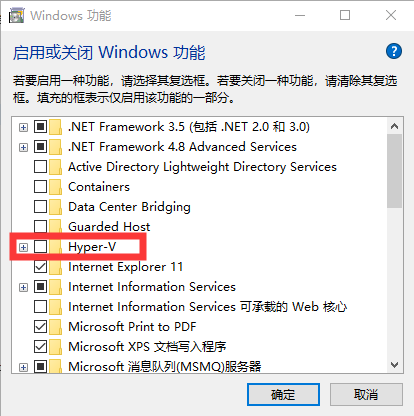

VMware Workstation Pro安装macOS虚拟机
更新日期:
文章目录
操作系统版本：Windows 10
虚拟机软件版本：VMware Workstation Pro 15.15.1
关闭hyper虚拟化相关设置
在“控制面板”中，对系统功能中的hyper-V全部进行禁用
控制面板 - 程序和功能 - 启用或关闭 Windows 功能

在“PowerShell”中，对hyper-V相关服务进行禁用
1 | bcdedit /set hypervisorlaunchtype off |
安装WMware Workstation Pro 15.5.1
按指定安装过程安装即可。
解锁macOS支持
- 下载解锁工具
- 把下载的unlocker文件夹放到VMware Workstation Pro 15.5.1的安装目录
- 管理员权限执行unlocker.exe
安装macOS
- “新建虚拟机”按指定要求完成配置即可
- 安装完成后，进入macOS，此时，可能发现分辨率只有1024x768，解决方案是需要安装VMware Tools，安装完成后，即恢复正分辨率